sept 2020 - may 2026

oct 2025 - may 2026
kajabi checkout
Enabled merchant upsells and order bumps to lift average order value at checkout.
10.88%
Average conversion rate
$257K
Total GMV
2,149
Upsell purchases
*Metric reflects one month of beta data. Figures have very likely shifted since.
On the left, the merchant's upsell creation experience; on the right, the upsell customers see at checkout.
On the left, the merchant's order bump creation experience; on the right, the order bump customers see at checkout.
apr 2026
media library
AI-prototyped concept for managing custom Media Library views.
Built using V0 to demo the micro-interactions for creating, saving, removing, and deleting views.
jan - sep 2025
affiliate payouts
Context & Role
Owned end-to-end design of Kajabi’s new affiliate payouts system. Partnered with PM from discovery through launch. Business driver: 2025 strategy to grow GMV - 22% of customers ran affiliate programs but only 6% used Kajabi’s built-in feature (~$130M off-platform GMV opportunity).
9%
Growth MoM
$400K
Paid commissions
$4.3M
Total GMV
Snippet from the marketing video for the Sep 2025 launch.
Problem
Creators had no way to efficiently manage payouts. Payouts being manual was the top pain point. Customers really wanted the option for Kajabi to automate this and help them pay out their affiliates on their behalf.
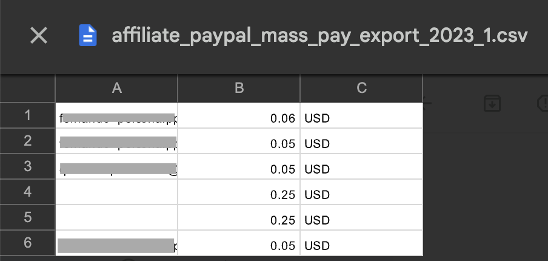
Example report customers download today, then cross-check against transactions manually.
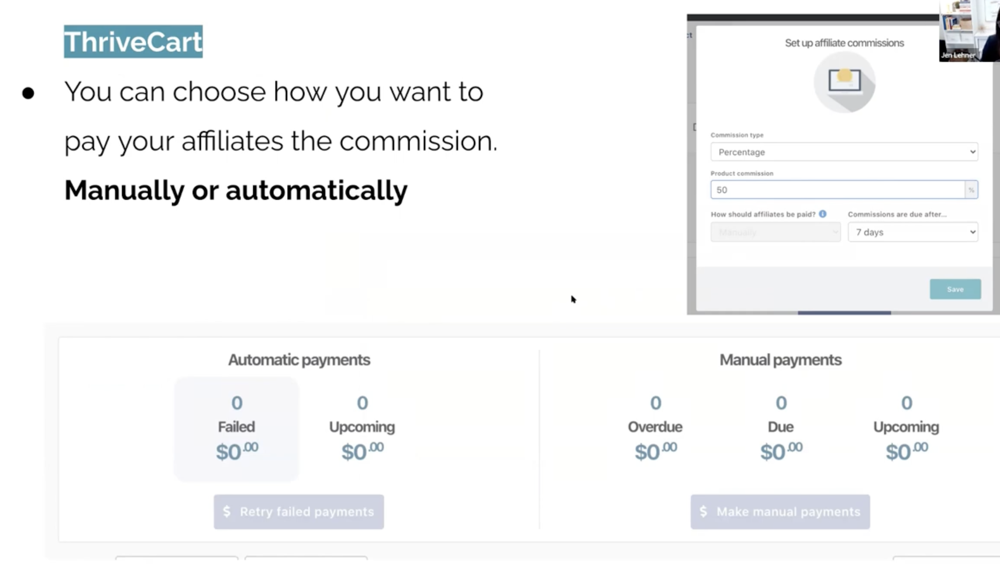
Screenshot of a customer walking through a competitor’s payout feature
Key decisions
- A system that supports both Manual and Automatic payout
- A payout flow for Manual that allows customer to cross-check transactions
- Setting a schedule for Manual
- Setting a schedule for Automatic
- View and export transactions and payouts
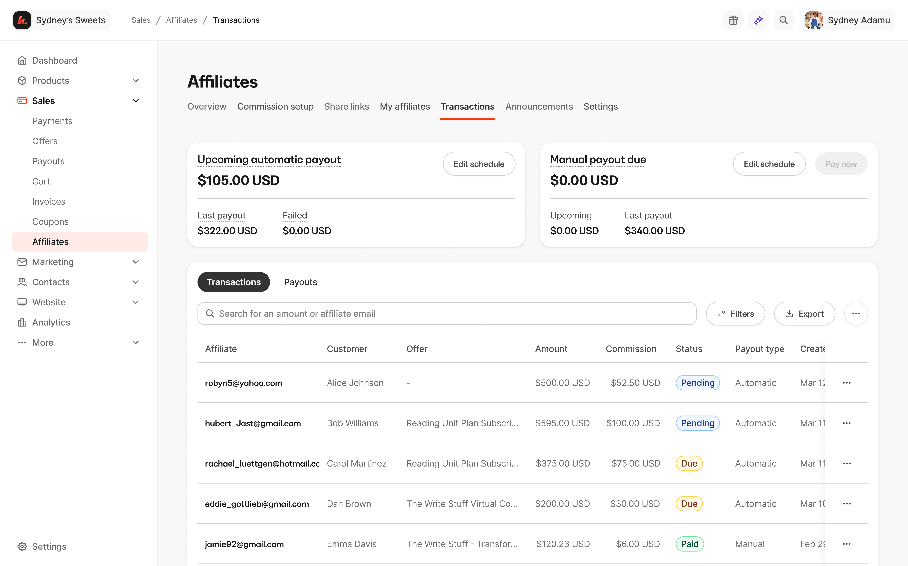
Dashboard widgets that offer quick entry points for Manual and Automatic payout.
Setting up the schedule for manual payouts, and how customers complete a manual payment to their affiliates.
Outcome
- Creators enabled 1,000 manual payouts and 466 automatic payouts.
- Creators paid out $400K in commissions,
- The total Gross Merchandise Value (GMV) reached $4.3 million, indicating strong performance and engagement.
- We also observed a 9% growth month-over-month from September to October, highlighting the positive trend in our affiliate activities.
jan - sep 2025
affiliate resource and bounty program
Context & Role
Aside from affiliate payouts, I also reimagined the analytics dashboard, and workflows for the creator to manage communication with their affiliates as well as a bounty program.
Added new set of metrics to the overview, such as leaderboard and top selling offers.
A bounty program letting customers set up time-bound rewards for their affiliates.
Under Settings, ability to add a memo and resources to communicate with affiliates.
sep - dec 2025
kajabi capital
Shipped Kajabi Capital, an end-to-end loan experience, partnering with Parafin.
$1.98M
Total originations
170
Loans issued
$12k
Median loan
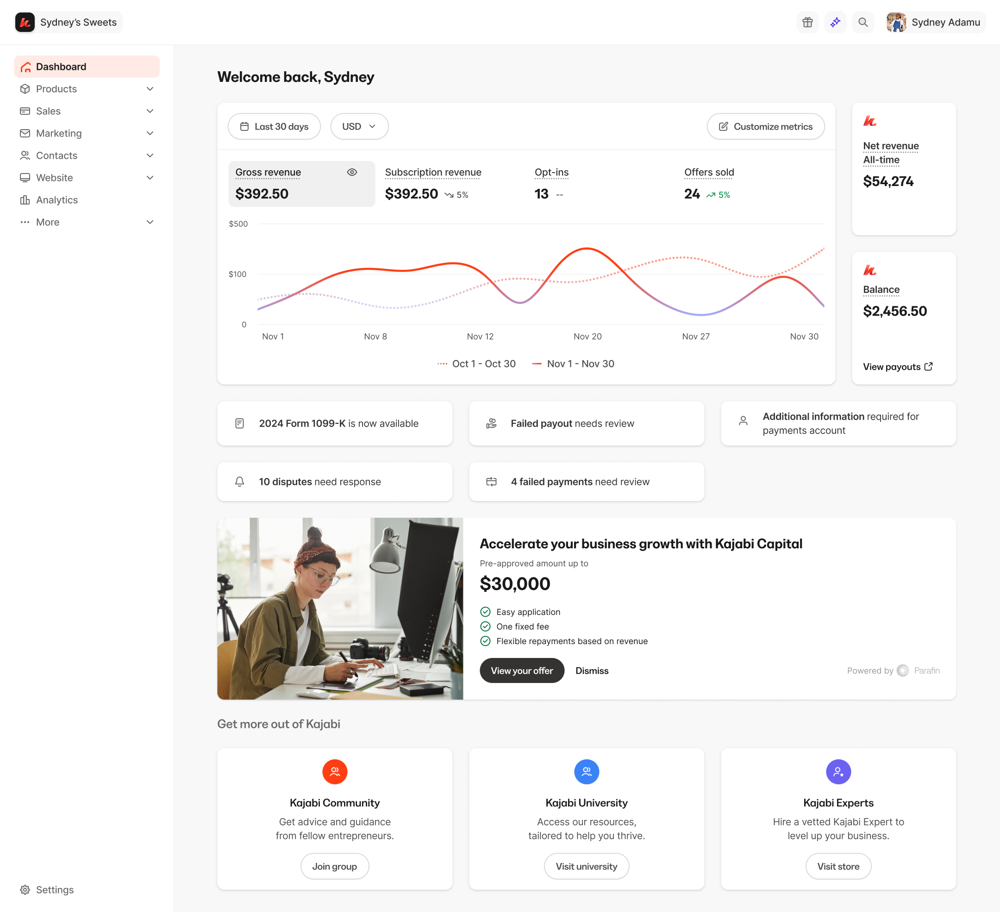
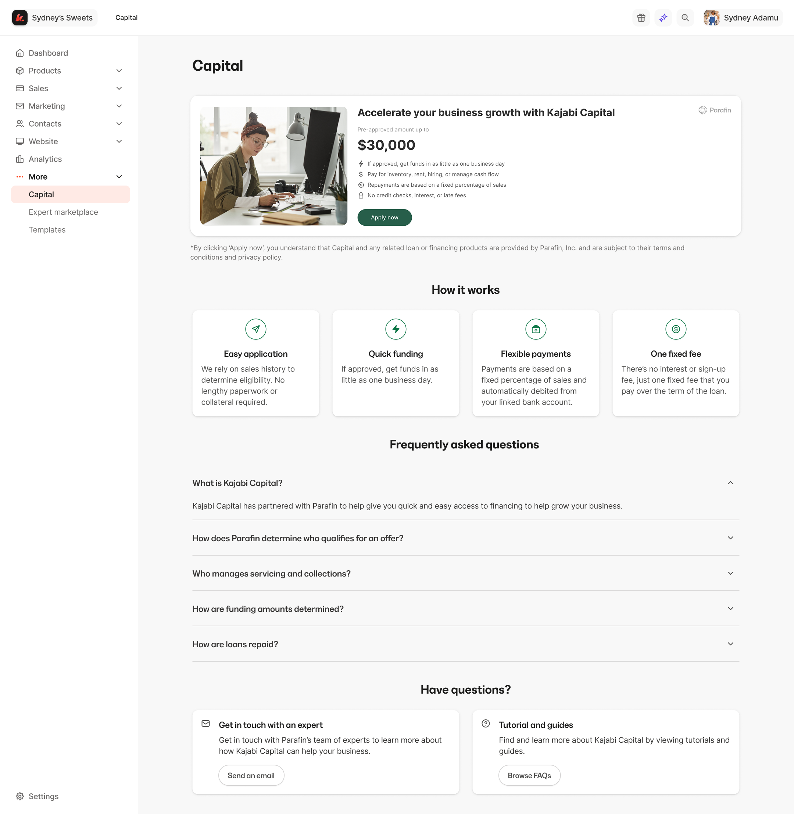
Dashboard entry point, marketing page, and mobile designs.
nov 2024
payments onboarding
Context & Role
Led 0–1 design for Kajabi Payments, our payments infrastructure. Owned onboarding for new and existing creators. Partnered with PM to drive strategy. US launch Jan 2024 — now core monetization layer for Kajabi.
58.31%
User penetration
11.77%
Increased adoption
$1B
Creator volume processed
A look at the rebranded Kajabi Payments onboarding experience, where the user selects UAE, which happened to align with Kajabi's launch in the region.
Problem
- Onboarding was fragmented and non-linear: users connected Stripe first, got bounced back to Kajabi with “incomplete setup” errors, and often never finished — thinking they were done.
- Stripe gave barely any education about which business type or structure to choose from.
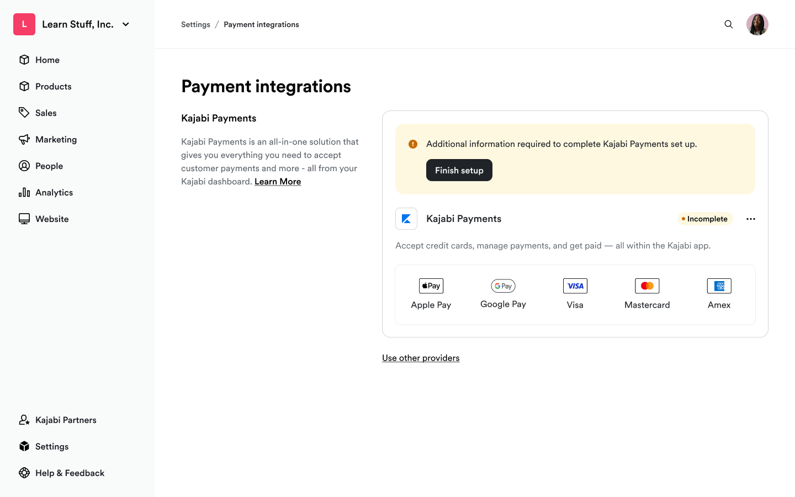
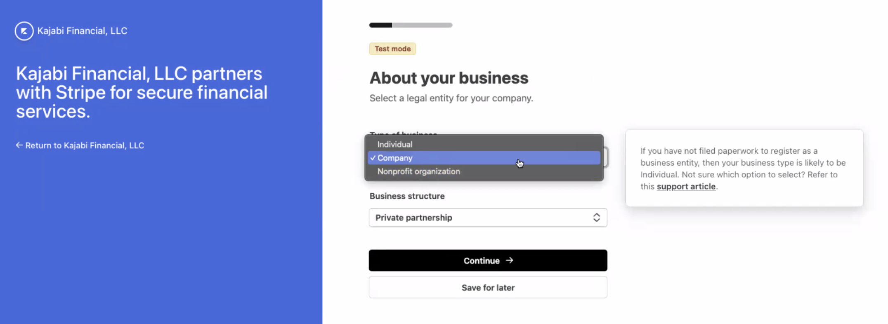
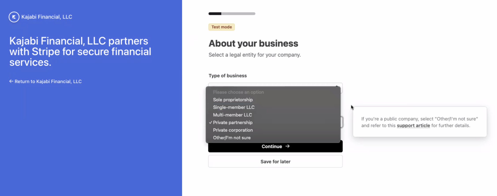
Key decisions
- Swapped the order: business info + contextual help on business structure + T&Cs before Stripe connect, instead of Stripe first.
- Bundled similar actions together to reduce steps and cognitive load.
- Made Stripe signup the last step, so users arrive with everything ready.
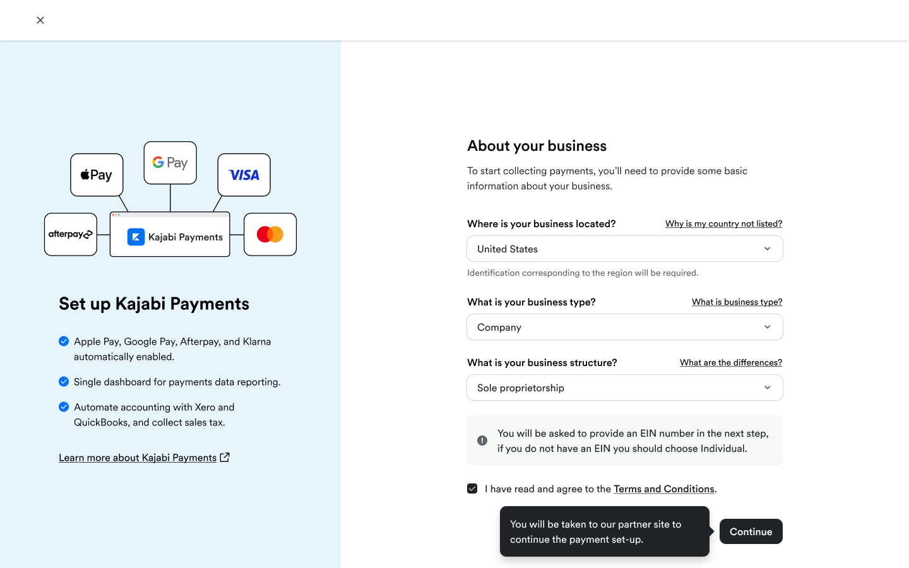
Tradeoff
Asking for more info up front risked drop-off, but context and guidance reduced confusion enough that completion went up.
Outcome
- 58.31% penetration, surpassing Stripe by 21%
- $1B+ creator volume processed
- 11% lift in KP adoption from the redesign, fewer CX tickets on onboarding
- New customers now default into KP with fewer objections; live across CA, GB, AU, UAE, EU
2024 - 2026
payouts
Designed to support multiple bank accounts as well as instant payouts.
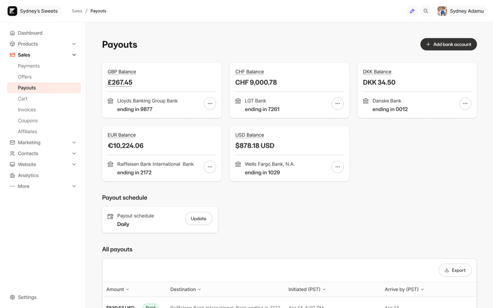
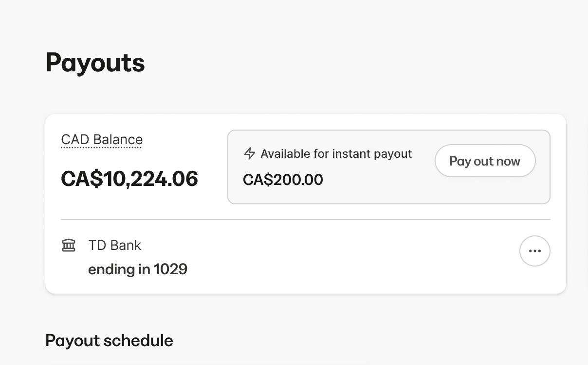
On the left shows multiple bank accounts, and on the right is the instant payouts feature.
sep - nov 2024
disputes
Created a system for customers to manage and take action on disputed payments.
18.87%
Dispute win rate
39%
Increase over prior win rate
Disputed transactions at various stages.
jun - aug 2025
analytics
Since 2023, I redesigned Kajabi's Payments dashboard and, in 2025, expanded into platform-wide Analytics, creating flexible, shared, systematized patterns across the app.
The redesigned Payments dashboard.
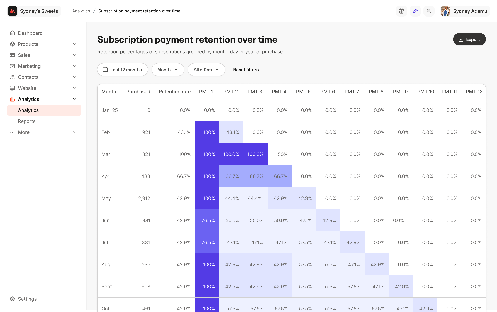
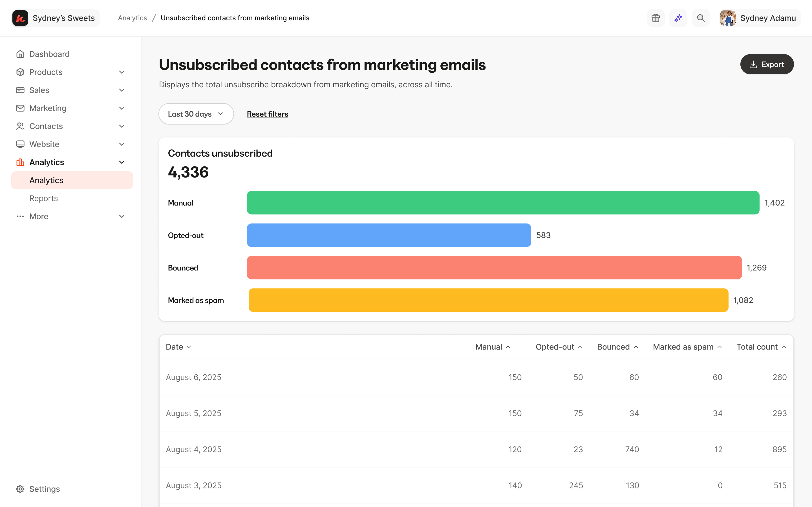
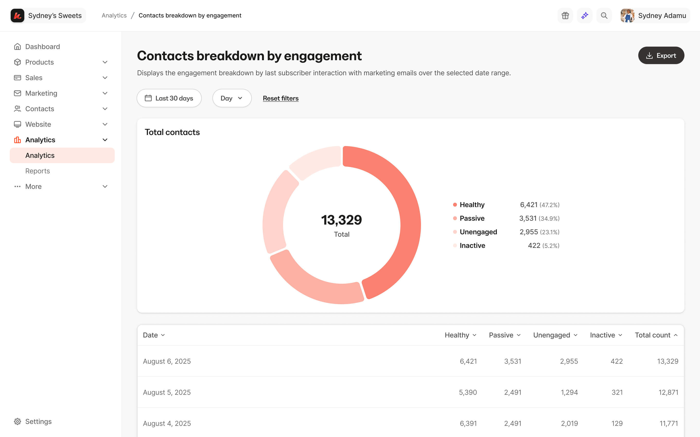
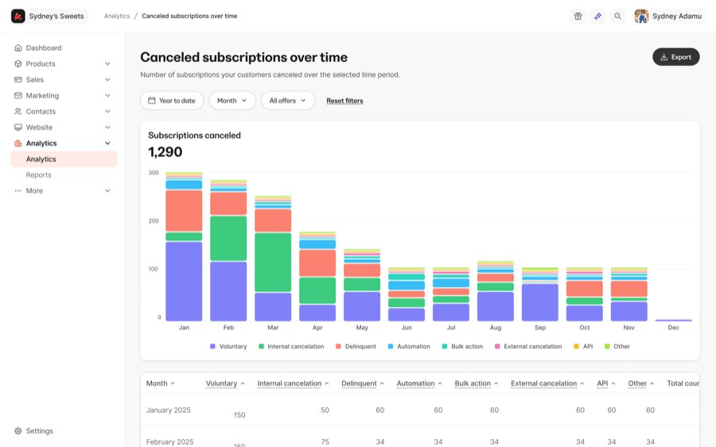
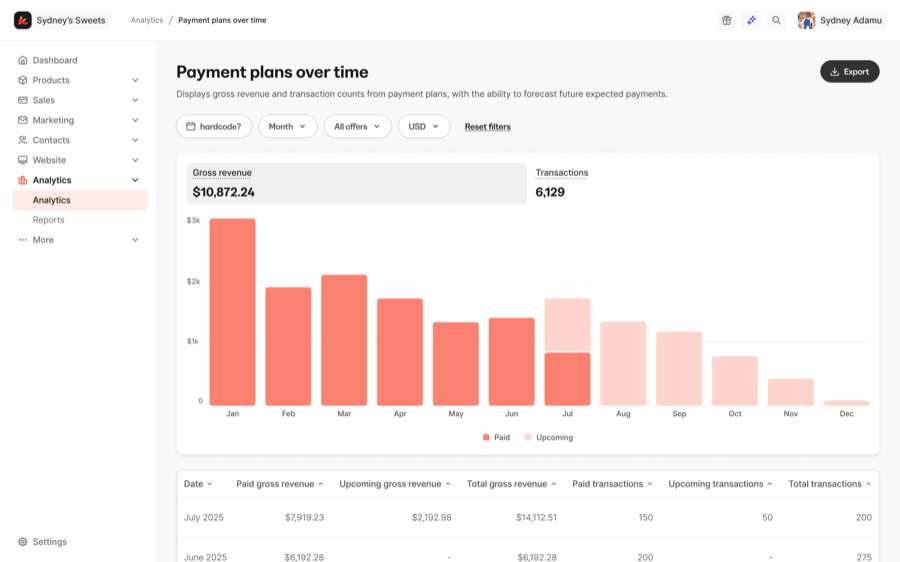
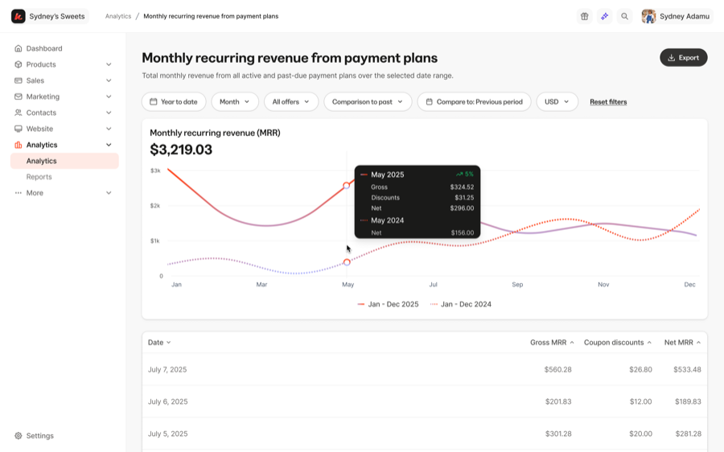
Some of the data visualization charts I designed for the Analytics team.
nov - dec 2024
transaction details page revamp
Redesigned the transaction details page's hierarchy for clearer, easier scannability.
A snapshot of what a customer sees after clicking into a sale, with the full breakdown of that purchase.